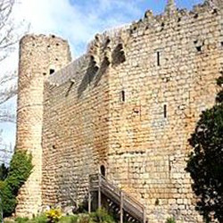
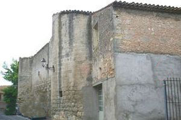
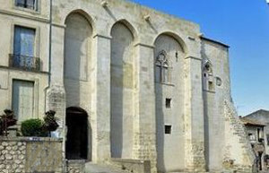
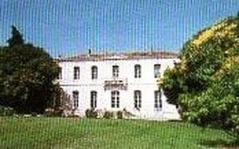
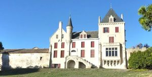
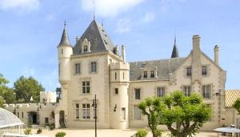
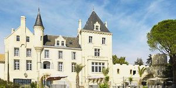
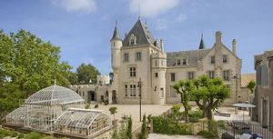

Recensement Jean-Claude Truffet
| Département | 34 — Hérault |
| Canton | Capestang |
| Commune | Capestang |
| Type d'édifice | Château |
| Période d'origine | XIV-XIX |








Trois châteaux à Capestang celui des archevêques, celui de Redonde à Montels chambres d'hôtes par Hugues de Rodez Bennevent et celui de Carasses du XIXe siècle. CAPESTANG, est un édifice médiéval des XIVe et XVe siècles des archevêques de Narbonne. La magnificence du château où siégèrent les états du Languedoc et où séjourna le Duc de Berry. Les Gaucerand furent pourchassés et éliminés. Les archevêques restèrent seuls maîtres de Capestang devenu une ville active. Puis Bernard de Fargues (1311-1341), neveu du pape Clément V, sattacha à décorer le château début du XIVe siècle. Au milieu du XVe siècle, les Harcourt, Jean (1436-1451) puis Louis (1451-1460), qui se succèdent à larchiépiscopat, le château abritait , du temps de sa splendeur médiévale, les services administratifs et le tribunal de larchevêque. Mais, comme de la plupart de leurs autres 18 châteaux, les archevêques se désintéressèrent de leur logis capestanais à la période moderne. Dès le milieu du XVIIe siècle, la chapelle est en ruines. Au XVIIIIe siècle, le château ne sert plus quà abriter la salle de justice (appelé auditoire), sera vendu en 1791, comme bien national subit de profondes transformations dans la deuxième moitié du XIXe siècle. Les propriétaires construisirent, à la place de la salle de justice, une vaste maison qui empiéta sur la salle dapparat En 1855, les propriétaires firent faire des relevés d'aquarelles, des décors et en 1875, à Louis Fouchère un dessin de la cheminée monumentale qui disparut ensuite, les uns et les autres conservés à la Médiathèque de larchitecture et du Patrimoine. Le château fut acheté par la mairie en 1937. CARRASSES, en 1896, le propriétaire M. Emile Hue fait appel à larchitecte-paysagiste Fleury P. Du Sert pour un projet de transformation du parc. Puis, les Carrasses sont rachetés en 2008 pour être transformés en résidence hôtelière de luxe, associée à une exploitation viticole. Les bâtiments ont été entièrement restaurés. Aujourd'hui Françoise Davidenko-Holzer, directrice générale du château.
A Capestang, cest entre 1237 et 1270, quau-dessus dun bâtiment bas et plus ancien aurait été élevée la grande salle de ce château. Une vaste enceinte sajouta au logis seigneurial, désormais desservi par un escalier monumental (détruit dans les années 50). La grande salle, qui nest pas tout à fait rectangulaire, mesure environ 20 m de long et 8,40m de large. Le décor du plafond peint couvre tout lespace de la vaste et primitive salle dapparat du château. La salle d'apparat du château est le point fort de la visite avec ses murs où alternent les armes de France et de B. de Fargues du XIVe et, véritable joyau. Château de l'Archevêque, classé monument historique. Château fort au XIIe siècle, résidence de l'Archevêque de Narbonne. Il abrite un magnifique plafond peint datant du XVe siècle, illustré et expliqué par le centre d'interprétation. Les Carrasses est un domaine viticole du XIXe siècle rénové, bâtis en 1886 par larchitecte bordelais Louis Garros sur les ruines dun relais pour les pèlerins sur le chemin de Saint-Jacques-de-Compostelle, le château Les Carrasses et ses dépendances composent lancien domaine viticole de la Bastide Neuve. Corps de logis rectangulaire à deux niveaux et attiques, accolés à deux pavillons, l'un style donjon carré à toit pointu à l'opposé l'autre pavillon rectangulaire les deux dépassant l'ensemble accolé d'une échauguette à toit en poivrière. Rotondes; château viticole un corps de logis rectangulaire à deux niveaux toiture en croupe.
Archevêques de Narbonne M. Emile Hue
"
Vestiges à Capestang , château des archevêques , la Rotonde et le château de Carasses.